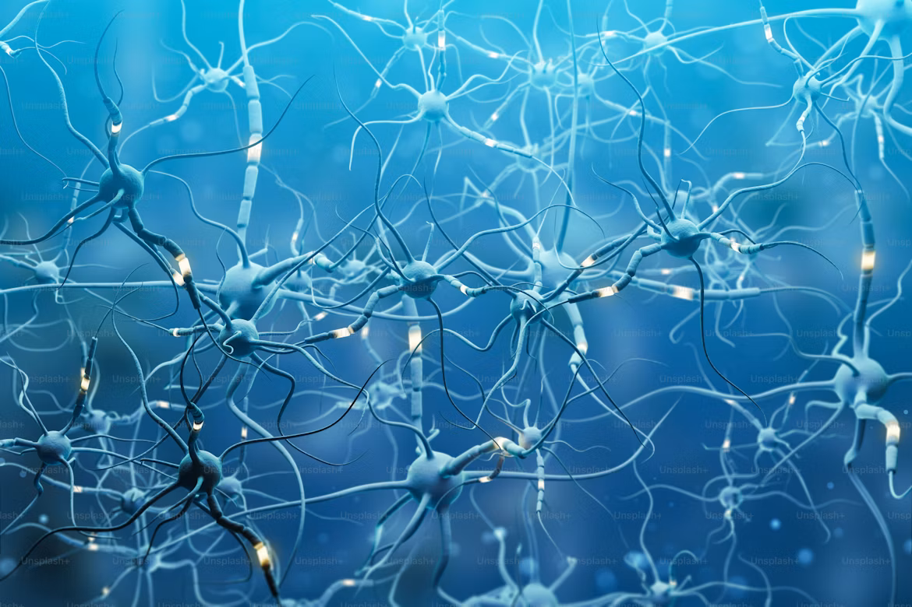

What are Neural Networks?

Artificial Neural Networks (ANNs) are computer systems loosely based on how the brain works. They're built out of layers of connected "neurons" (basically little nodes) that take in information, do some math on it, and pass the result along to the next layer.
Neural networks are what power Deep Learning, and they're behind a lot of the big AI wins you've probably heard about — stuff like recognizing images, understanding language, and AIs that can play games at a superhuman level.
Structure of a Neural Network
Most neural networks are made up of three kinds of layers:
- Input Layer: This is where the raw data comes in, like the pixel values of an image.
- Hidden Layers: The middle layers that do the actual processing through weighted connections. "Deep" networks just means there are a lot of these.
- Output Layer: Where the final answer comes out, like whether the image is a "cat" or a "dog."
Types of Neural Networks
- Convolutional Neural Networks (CNN): These are the go-to for images and computer vision.
- Recurrent Neural Networks (RNN): Built for data that comes in sequences, like text or speech.
- Generative Adversarial Networks (GAN): Used to create new data, like those realistic fake images you see online.
- Transformers: The design behind big language models like ChatGPT and Claude.